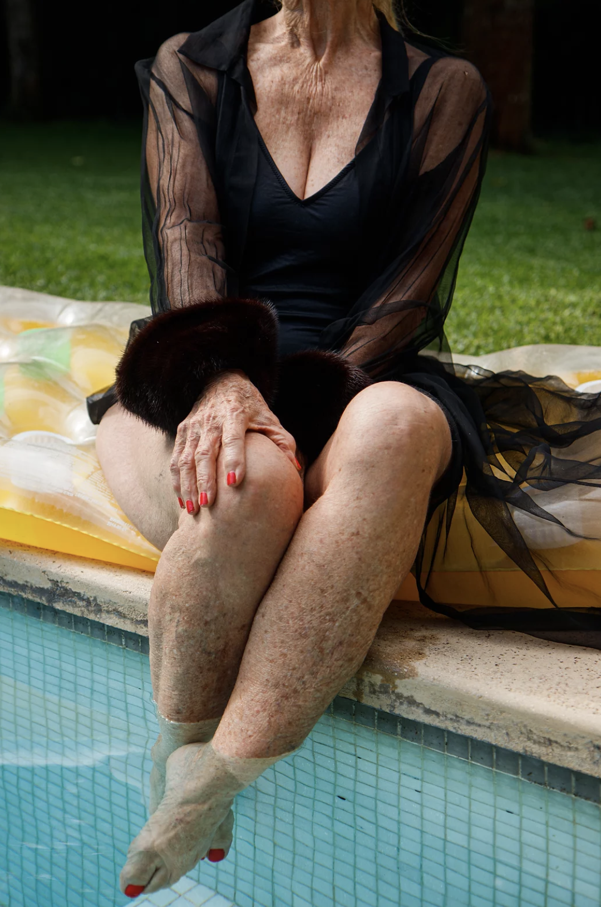
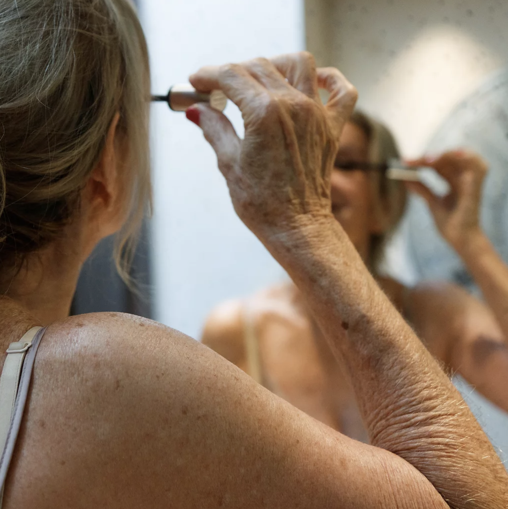
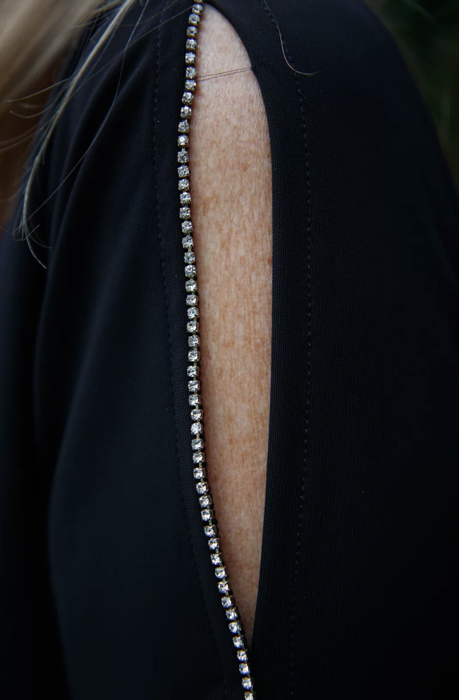

An introspective journey of confronting our internal uneasiness and battling our feelings.
This series represents the struggle of growing up in a desolate coming of age: the discomfort in being who we are and what we aim to be. With my personal experience lenses, I portrayed my different sensations into still moments.
-
Un viaje introspectivo; la confrontación de nuestro malestar interno; luchar contra nuestros sentimientos.
Esta serie representa la lucha de crecer en una edad desolada: la incomodidad de ser quienes somos y lo que pretendemos a ser. A partir de mi experiencia personal, retrate mis diferentes sensaciones en momentos eternos.